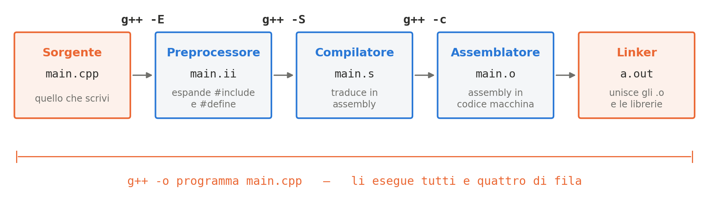

Programmazione Scientifica++: Lezione 4
Struttura di un Programma, Tipi, Scope e Namespace
Argomenti di oggi
- Come nasce un eseguibile: preprocessore, compilatore, assemblatore, linker
- La struttura di un programma C++
- Il
main, le direttive, i commenti
- Il
- Ingresso e uscita con
iostreamcout,cin, e cosa succede davvero quando una lettura fallisce
- Variabili
- Dichiarazione, inizializzazione, la trappola della divisione intera
- Scope e variable shadowing
- I namespace: l’operatore
::,using namespacee le ambiguità
Di cosa hai bisogno per compilare il tuo programma C++?

- Su macchine Linux/Unix dovresti avere il compilatore
g++installato di default - Su Windows puoi usare cygwin (che assomiglia a UNIX e ha gcc/g++) o WSL
- Oppure puoi anche usare IDE moderni (Visual Studio, VS Code, CLion, ecc.)
Struttura di un programma C++
Il C++ è quasi un sovrainsieme del C: un programma C, salvo poche eccezioni, è anche un programma C++ (un esempio: in C++ il void* restituito da malloc va convertito esplicitamente). Le prossime slide sono quindi in gran parte un ripasso di ciò che resta uguale; segnaliamo man mano quello che il C++ aggiunge.
Direttive del precompilatore/preprocessore
Il preprocessore è lo stesso del C. Cosa fa?
iostream verrà incluso prima della compilazione di questo codice!
Cosa fa il preprocessore?
Sostituisce le direttive dell’utente con il codice sorgente richiesto (Solo pre-compilazione)
Il risultato del solo preprocessore si vede con g++ -E main.cpp.
Commenti in C++
Come in C (dal C99) i commenti di riga sono preceduti da //, e restano validi i commenti /* ... */. Possono iniziare ovunque nel programma, sia all’inizio della riga che subito dopo un’istruzione a metà della riga
Compilare un’applicazione C++
In questo corso useremo il compilatore gratuito g++, il corrispondente C++ di gcc, con le stesse opzioni
-o Welcome: Nome dell’eseguibile (output binario)Welcome.cpp: File C++ da compilare e linkare
Alcuni aspetti base del C++
Ripasso: sono le stesse regole del C.
- Tutte le istruzioni devono terminare con un punto e virgola
;- Gli a capo non contano, salvo nelle stringhe, nei commenti
//e nelle direttive#
- Gli a capo non contano, salvo nelle stringhe, nei commenti
- I commenti sono preceduti da
//- I commenti possono occupare un’intera riga o trovarsi a metà della riga dopo un’istruzione
- Qualsiasi applicazione C++ deve avere una funzione
main - Il
maindeve restituire unint(intero)- Il valore restituito può essere utilizzato dall’utente/client/ambiente
- Es. per capire se si è verificata una condizione di errore
Cosa succede se cambiamo il tipo del main?
Il compilatore richiede che il main restituisca un valore int! Qui il C++ è più severo del C: g++ dà un errore, mentre gcc su un file .c compila, e solo con -Wall avvisa.
Output con iostream
iostream fornisce funzionalità di output al tuo programma
std:: dice che cout appartiene alla libreria standard: il perché lo vediamo alla fine della lezione, con i namespace. endl va a capo come "\n" e svuota il buffer.
Input con iostream
iostream fornisce anche funzionalità di input al tuo programma
Tipici errori di compilazione finora
// BadCode1.cpp
#include <iostream>
int main() { // il main inizia qui
int nIterations;
std::cout << "How many
iterations? "; // impossibile andare a capo in mezzo a una stringa!
std::cin >> nIteration; // nome errato! manca la 's' finale
// stampa il messaggio sullo STDOUT
std::cout << "Numero di iterazioni richieste: "
<< nIterations << std::endl;
return 0 // manca il ; !
} // fine del mainDichiarazione e definizione delle variabili
// SimpleVars.cpp
#include <iostream>
int main() {
int samples; // definizione, senza inizializzazione
int events = 0; // definizione con inizializzazione
samples = 123; // assegnazione
std::cout << "Quanti samples? " ;
std::cin >> samples; // assegnazione tramite I/O
std::cout << "samples: " << samples
<< "\t" // inserisce un carattere di tabulazione (tab) nella stampa
<< "events: " << events
<< std::endl;
return 0;
} // fine del mainCome in C, int samples; è già una definizione: crea la variabile. Una dichiarazione pura (extern int samples;) dice solo che esiste altrove.
Richiamo: la divisione intera
Avviso
Lo sapete già dal C. Lo ripetiamo perché è fra gli errori più insidiosi del calcolo scientifico: non produce nessun errore né avviso.
Se entrambi gli operandi sono interi, / è la divisione intera: 5 / 7 fa 0, con resto scartato. Il risultato viene poi convertito in double, ma il danno è già fatto. Il programma compila, gira, e stampa un’efficienza pari a zero.
Altri casi che vi capiteranno:
La cura: promozione esplicita
Basta che uno dei due operandi sia double: C++ promuove automaticamente anche l’altro, e la divisione diventa reale.
Tre regole pratiche:
- Nelle costanti scrivete sempre il punto:
1.0, non1. - Con le variabili usate
static_cast<double>(x): è esplicito, si cerca congrep, e non modificax. - Il cast C-style
(double) xfunziona ma è da evitare: non si distingue dalle conversioni pericolose fra puntatori (Lezione 16).
Nel Laboratorio 02, questa settimana, farete stampare 5 / 2: sembra banale, è il modo migliore per non dimenticarsene più.
Cicli e iterazioni in C++
I cicli sono quelli del C (for, while, do–while); di nuovo c’è solo l’ingresso e uscita con std::cin e std::cout.
int main() { // il main inizia qui
int nIterations;
std::cout << "Quante iterazioni? ";
std::cin >> nIterations;
int step;
std::cout << "passo (step) dell'iterazione? " ;
std::cin >> step;
for(int index=0; index < nIterations; index+=step) {
std::cout << "indice: " << index << std::endl;
}
return 0;
} // fine del mainProblemi con cin
Avviso
Cosa succede se inseriamo una stringa invece di un numero? Dal C++11 >> azzera la variabile e alza un flag di errore. Il programma non si accorge di niente e prosegue con iters = 0: nessun avviso, nessun crash, un numero plausibile. È peggio di un valore assurdo, che almeno si nota.
Variabili non inizializzate
int main() {
1 int iters;
std::cout << "iters prima: " << iters << std::endl;
std::cout << "iterazioni? ";
std::cin >> iters;
std::cout << "richieste " << iters << std::endl;
return 0;
}- 1
-
Valore random (spazzatura) poiché la memoria non è stata inizializzata: questa riga è undefined behaviour, può stampare qualsiasi cosa. La lettura fallita che segue invece azzera
iters, e la spazzatura sparisce.
Verificare lo stato di cin
- 1
-
Se diamo in pasto del testo a una variabile
int, l’operazione fallisce silenziosamente. - 2
-
Usiamo
.fail()per intercettare l’errore e gestirlo!
Ripartire dopo una lettura fallita
Dopo un errore cin resta bloccato: finché il flag è alzato ogni lettura fallisce subito, e il testo sbagliato resta nel buffer. Per ripartire servono due chiamate, sempre insieme:
- 1
- Toglie lo stato di errore.
- 2
-
Scarta i caratteri rimasti nel buffer: al più
n(il primo argomento), fermandosi dopo il primo a capo.
std::numeric_limits<std::streamsize>::max() è il più grande valore del tipo std::streamsize. Passato a ignore, lo standard lo interpreta come “nessun limite”: si butta la riga intera, di qualunque lunghezza. La sintassi <...> è quella dei template, che vedremo più avanti.
Istruzioni di controllo
Identiche al C. In più il C++ ha il tipo bool nativo, con i valori true e false (in C serve <stdbool.h>).
Scope delle variabili
- Come in C, lo scope (visibilità) di un nome è il blocco in cui quel nome è valido.
- Un blocco è delimitato da parentesi graffe
{ }.
- 1
-
erroresiste solo all’interno dicompute_loss(). - 2
-
predictionesiste in tutto ilmain(). - 3
-
ERRORE DI COMPILAZIONE:
errornon è in questo scope!
Variable shadowing
Cosa succede se dichiariamo una variabile con lo stesso nome in uno scope nidificato? La variabile più interna “nasconde” quella esterna!
- 1
-
Questa
x“nasconde” temporaneamente laxesterna! - 2
-
Fine scope interno, la
xinterna viene distrutta per sempre.
Cos’è un namespace?
- Previene le “collisioni di nomi”: due librerie diverse possono avere una funzione chiamata
print().
Usare i namespace: l’operatore ::
#include <cmath>
namespace neural {
// la sigmoide: quella che useremo davvero nella rete
double activate(double x) {
return 1.0 / (1.0 + std::exp(-x));
}
}
namespace math {
// la tangente iperbolica: un'altra scelta possibile
double activate(double x) { return std::tanh(x); }
}
int main() {
1 double out1 = neural::activate(-2.5);
2 double out2 = math::activate(-2.5);
return 0;
}- 1
-
Richiama esplicitamente la
activatedel namespaceneural: vale 0.076. - 2
-
Richiama l’omonima di
math: vale −0.987. Stesso nome, nessuna collisione.
Nota
L’operatore :: si chiama Scope Resolution Operator. Lo vediamo sempre in std::cout, perché cout appartiene al namespace std; lo stesso per std::exp e std::tanh: <cmath> è il math.h del C, con le funzioni nel namespace std.
Direttiva using namespace
- 1
-
Rende tutti i nomi del namespace
stddisponibili senza dover scriverestd::. - 2
-
Il compilatore ora sa che
coutedendlfanno parte distd.
Avviso
Nel resto del corso scriviamo sempre std::. Con using namespace std; ogni nome non qualificato viene cercato anche in std: un nome comune come count o distance diventa ambiguo, e se una chiamata non compila il compilatore elenca anche i candidati di std che ha provato (per una nostra distance(Punto, Punto) chiamata male, l’errore passa da 6 a 24 righe).
Attenzione a using multipli!
Creare ambiguità è facilissimo:
using namespace math;
using namespace neural;
using namespace std;
int main() {
double input = 3.5;
// Ambiguo! Di quale metodo activate() stiamo parlando?
1 double out1 = activate(input);
return 0;
}- 1
-
Errore del compilatore:
call of overloaded 'activate(double&)' is ambiguous. Overloaded: ci sono più funzioni con lo stesso nome. Il&indica una reference (Lezione 05): qui dice solo cheinputè una variabile.
Importante
Regola d’oro: Mai inserire using namespace std; in un file header (.h o .hpp). Potreste inquinare i file di chi usa la vostra libreria!
Esercizio in classe (15 min): lettura robusta di un numero
Chiedete all’utente il numero di epoche, e non arrendetevi finché non ne digita uno valido.
- Un ciclo che chiede
epocheconstd::cin >> epoche. - Se l’utente digita del testo, dite che non è un numero e richiedete.
- Se digita zero o un negativo, dite che dev’essere positivo e richiedete.
- Quando il numero è buono, uscite dal ciclo e stampatelo.
Avviso
Provate prima la versione ingenua, senza clear() e ignore(): digitate pippo e guardate cosa succede. Quello che vedete è il motivo di questo esercizio.
Esercizio: soluzione
#include <iostream>
#include <limits>
int main() {
int epoche = 0;
while (true) {
std::cout << "Quante epoche? ";
if (std::cin >> epoche) { // lo STATO, non il valore
if (epoche > 0) break;
std::cout << "Dev'essere positivo.\n";
} else {
if (std::cin.eof()) return 1; // fine dell'input
std::cout << "Quello non e' un numero.\n";
std::cin.clear();
std::cin.ignore(std::numeric_limits<std::streamsize>::max(), '\n');
}
}
std::cout << "Addestro per " << epoche << " epoche.\n";
}La riga con eof() serve se l’input finisce (Ctrl-D, o un file rediretto): non c’è più niente da rileggere, e senza quel controllo il ciclo girerebbe per sempre. Manca anche il return 0; finale: nel main, e solo lì, arrivare in fondo equivale a restituire 0.
Esercizio: soluzione — perché funziona
std::cin >> epocherestituisce lo stream, che in unifdiventa il suo stato: vero se la lettura è riuscita.- Le due righe vanno insieme:
clear()toglie il flag,ignore()butta la riga sbagliata. Senza la seconda quel testo resta nel buffer, e viene riletto all’infinito.
Quante epoche? pippo
Quello non e' un numero.
Quante epoche? -5
Dev'essere positivo.
Quante epoche? 20
Addestro per 20 epoche.Senza clear() e ignore()
Quante epoche? Quello non e' un numero.
Quante epoche? Quello non e' un numero.
Quante epoche? Quello non e' un numero. <- all'infinitoIl cin resta in stato di errore e non consuma più niente: ogni giro rilegge lo stesso pippo che non se n’è mai andato.
Esercizi lampo: cosa stampa?
Tre frammenti, un minuto ciascuno. Rispondete prima di girare la slide: in tutti e tre la risposta istintiva è sbagliata.
1. L’utente digita ciao, non un numero.
2.
3.
Esercizi lampo: le risposte
1. Stampa 0, non 42. Dal C++11 una lettura fallita azzera la variabile: il valore che c’era prima è perso. Se vi serve, controllate cin.fail() prima di usare n.
2. Stampa 2 2.5. Nel primo caso a / b è già stato calcolato fra interi: il cast arriva troppo tardi e promuove un 2 in cui non c’è più niente da recuperare. Il cast va messo su un operando, mai sul risultato.
3. Stampa 0, non 3. L’i dichiarato nella testa del for è una seconda variabile, visibile solo dentro il ciclo, che nasconde quella esterna: l’i esterno nessuno l’ha mai toccato. È per questo che esiste l’opzione -Wshadow: -Wall da sola non dice niente.